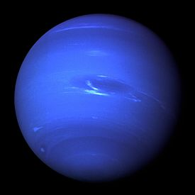

Neptune is the eighth planet from the sun. It was the first planet to get its existence predicted by
mathematical calculations before it was actually seen through a telescope on Sept. 23, 1846.
Irregularities in the orbit of Uranus led French astronomer Alexis Bouvard to suggest that the
gravitational pull from another celestial body might be responsible. German astronomer Johann Galle
then relied on subsequent calculations to help spot Neptune via telescope. Previously, astronomer
Galileo Galilei sketched the planet, but he mistook it for a star due to its slow motion. In
accordance with all the other planets seen in the sky, this new world was given a name from Greek
and Roman mythology — Neptune, the Roman god of the sea.
Only one mission has flown by Neptune – Voyager 2 in 1989 – meaning that astronomers have done most
studies using ground-based telescopes. Today, there are still many mysteries about the cool, blue
planet, such as why its winds are so speedy and why its magnetic field is offset.
While Neptune is of interest because it is in our own solar system, astronomers are also interested
in learning more about the planet to assist with exoplanet studies. Specifically, some astronomers
are interested in learning about the habitability of worlds that are somewhat bigger than Earth.
Those that are closer to Earth's size are called "super-Earths", while those that are closer to
Neptune's size are "mini-Neptunes." However, there is some debate about those terms given that
today's telescope technology does not make it possible to view how much atmosphere is on those
planet types, making it difficult to make a distinction.

Neptune's cloud cover has an especially vivid blue tint that is partly due to an as-yet-unidentified
compound and the result of the absorption of red light by methane in the planets mostly hydrogen-helium
atmosphere. Photos of Neptune reveal a blue planet, and it is often dubbed an ice giant, since it
possesses a thick, slushy fluid mix of water, ammonia and methane ices under its atmosphere and is
roughly 17 times Earth's mass and nearly 58 times its volume, according to a NASA fact sheet. Neptune's
rocky core alone is thought to be roughly equal to Earth's mass, NASA says.
Despite its great distance from the sun, which means it gets little sunlight to help warm and drive its
atmosphere, Neptune's winds can reach up to 1,500 mph (2,400 km/h), the fastest detected yet in the
solar system. These winds were linked with a large dark storm that Voyager 2 tracked in Neptune's
southern hemisphere in 1989. This oval-shaped, counterclockwise-spinning "Great Dark Spot" was large
enough to contain the entire Earth, and moved westward at nearly 750 mph (1,200 km/h). This storm seemed
to have vanished when the Hubble Space Telescope later searched for it. Hubble has also revealed the
appearance and then fading of other Great Dark Spots over the past decade. A new one was observed in
2016.
Neptune's magnetic poles are tipped over by roughly 47 degrees compared with the poles along which it
spins. As such, the planet's magnetic field, which is about 27 times more powerful than Earth's,
undergoes wild swings during each rotation.
Neptune's elliptical, oval-shaped orbit keeps the planet an average distance from the sun of almost 2.8
billion miles (4.5 billion kilometers), or roughly 30 times as far away as Earth, making it invisible to
the naked eye. Neptune goes around the sun once roughly every 165 Earth years, and completed its first
orbit, since being discovered, in 2011.
Every 248 years, Pluto moves inside Neptune's orbit for 20 years or so, during which time it is closer
to the sun than Neptune. Nevertheless, Neptune remains the farthest planet from the sun, since Pluto was
reclassified as a dwarf planet in 2006.